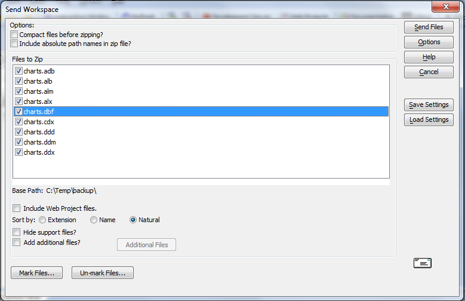

Send Tables, Sets, and Workspaces
You can send Alpha Anywhere tables, sets, or entire workspaces via email.
Select Tools > Send Workspace.
Select the files you wish to send.
Optionally, click Save Settings to save the operation with a name.
Optionally, click Load Settings to load a previously saved send operation.
Optionally, click the Options button to specify your email client (which can be the internal Alpha Anywhere email client or another email program, such as Eudora or Outlook ).
Click Send Files. Alpha Anywhere automatically creates a zip file that includes the files you want to send, and displays your email client, ready for addressing.

When you send a table, set, or workspace, you have the option of sending the data files only, the dictionary files only, or both. This is very useful if you want to update someone else's application without overwriting any of their data. For example, if you made some changes to the "Customer Information" form for the "Customer" table and you want to send the new version of the form to your client, without overwriting any of the data he has entered into the customer table, you can send the customer table data dictionary files only.